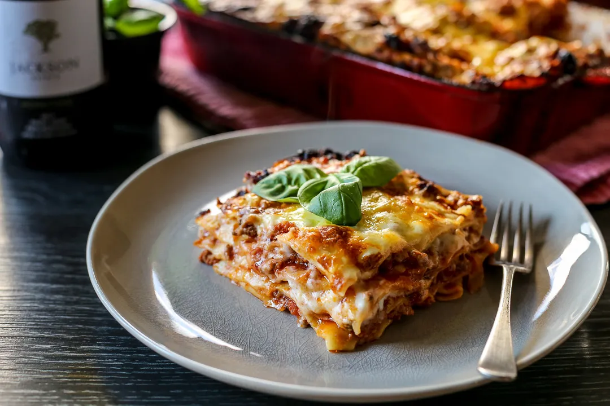

Home
Lasagna

This lasagna recipe takes a little work,
but it is so satisfying and filling that it's worth it!
When John Chandler submitted this lasagna recipe to us more than 20 years ago,
he had no idea how successful it would become.
One of our top-performing recipes of all time,
World's Best Lasagna racks up more than 7 million
views per year and has ranked among the most popular lasagna
recipes on the internet for two decades.
Unfortunately, John unexpectedly passed away at 53 years old.
Ingredients You'll Need for The Lasagna
- Meat: This super meaty lasagna has lean ground beef.
- Onion and garlic: An onion and two cloves of garlic.
-
Tomato products: You'll need a can of crushed tomatoes,
two cans of tomato sauce, and two cans of tomato paste.
- Sugar: Two tablespoons of white sugar
-
Spices and seasonings: This lasagna recipe
is flavored with fresh parsley,
dried basil leaves, salt, and black pepper.
- Lasagna noodles: Use store-bought
Steps
- Gather all your ingredients.
-
Cook ground beef, onion,
and garlic in a Dutch oven over medium heat until well browned.
-
Stir in crushed tomatoes, tomato sauce,
tomato paste, and water. Season with sugar, 2 tablespoons
parsley, basil, 1 teaspoon salt, Italian seasoning, and pepper.
Simmer, covered, for about 1 ½ hours, stirring occasionally.
-
Bring a large pot of lightly salted water to a boil.
Cook lasagna noodles in boiling water for 8 to
10 minutes. Drain noodles, and rinse with cold water.
- Preheat the oven to 375 degrees F (190 degrees C).
- Assemble.
- Bake it!